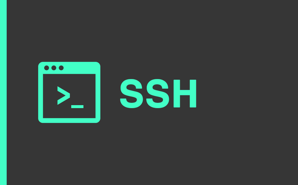
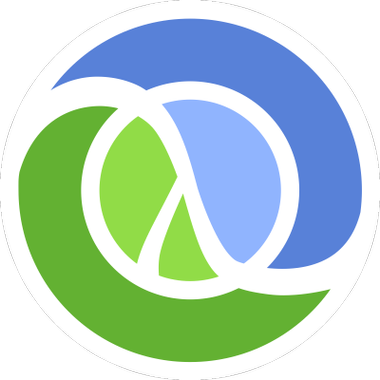

Full Release Automation
Automation of the complete release process of checkout of source
code, build, versioning, integration and sending of status reports with
the declared goal of achieving a high degree of automation of the tasks
typically performed manually by software integrators in complex software
projects.
Transparency

Transparent implementation of build descriptions through the
exclusive use of remote shell commands via ssh. Within complex software
projects, software integration solutions in many cases take over tasks
that are traditionally performed by build tool such as make. This bears
the danger that build processes can no longer be reproduced by all
project participants. An architecture in which all steps necessary for
the build must be executed via a remote shell effectively prevents
this.
Results Oriented GUI

Web-based user interface for a clear presentation of completed
and currently executed build processes, full text editor for build
descriptions, additional support functions for editing tables for cron
jobs, user access data and privileges, and documentation.
High Level Parameterization

Extensive possibilities of parameterization and templating. Control
of build processes via cron table, web interface or REST API. End-to-end
use of the functional programming languages Clojure and Clojurscript
for server and client (browser) implementations. Delivery as Java
ARchive (JAR), which contains all components and requires no further
dependencies except the JVM and a Unixoid operating system.
The following figure shows a screenshot of the Bond web interface in
practice. The status display only contains entries about those build
processes where changes in the source code have been identified. The
color green indicates that a build process was successfully completed,
while red symbolizes an early termination. Yellow indicates that a build
process is currently being processed. The button on the right can be
used to stop and restart builds. In addition, the console output for
each operation can be tracked in real-time and the changes identified
for each operation can be displayed. Each build process receives a
unique identification. All build results are stored in a directory with
the same name on the build machine. A software version number is also
generated to automatically create release candidates, which is displayed
in the middle column.

Build Status Page of Web GUI
Requirements
You need the following tools to be installed to run bond:
- Unix-type operating system e.g. GNU/Linux, BSD, Mac OS X
- SSH Client and Server, typically preinstalled on most Unix systems
- a recent JDK
Download and Run the Server
A precompiled release for bond can be retrieved from the following
URL. Or
just copy and paste the following command into a shell:
wget https://github.com/linneman/nightly-build/releases/download/v1.0.5/bond-1.0.5-standalone.jar
Use the following command to start the bond server:
java -jar bond-1.0.5-standalone.jar
Immediately after starting the server, an administration URL is
displayed on the local console:
______________ Administration Account ______________
Copy and paste the following URL into your brower to
active the administration account:
http://localhost:3000/confirm?name=admin&key=iUMXdnWbPzwExRz%2BclC8xA%3D%3D
This URL is used to unlock the administrator account and must be used
immediately after starting the server. Via the login button in the upper
right corner of the web interface a new password should be assigned to
the user 'admin'.
Starting the First Test Build
In directory build-descriptions the build configuration
'sample_config.clj' was added which can be executed immediately. The
only requirement is a key based ssh authentication to the local or any
remote build machine. Refer to
this tutorial
for more detail information how to set this up.
The easiest way is to use the local host as a build machine. If
ssh-key authentication is installed correctly, the following command
should print the contents of the root directory without a password
prompt.
ssh localhost "ls /"
If this is the case, first activate the cron table via the menu item
'Cron'. In the table row 'create-build-description-sample-1' select the
entry 'Start' via the button 'Action'. The build is started immediately
and displayed in the table 'Build Status'. There you can get further
information like the console output of the build process and stop and
restart the build process.
Refer to the section documentation
and to the projects
readme file on Github
for further information.